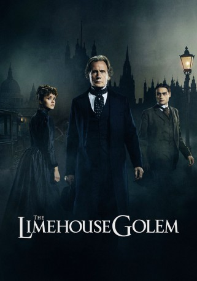
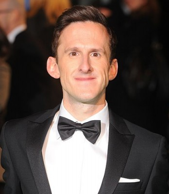
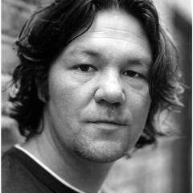
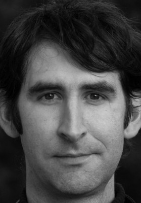
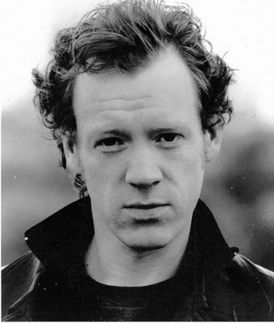

#7911 The Limehouse Golem
 gesehen am 06.01.2018
gesehen am 06.01.2018
 
 IMDB-Wertung: 6.3 / 10
IMDB-Wertung: 6.3 / 10  Metascore: 0
Metascore: 0 
Im heruntergekommenen Londoner Bezirk Limehouse treibt im Jahr 1880 ein brutaler Killer sein Unwesen, der an den Tatorten Botschaften hinterlässt, die in lateinischer Sprache und mit dem Blut der Opfer geschrieben sind. Aufgrund der Brutalität der Morde sind die Bürger von Limehouse überzeugt, dass der Mörder kein Mensch ist, sondern eine sagenhafte Kreatur aus der jüdischen Literatur und Mystik: ein aus Lehm geformter und mittels Magie zum Leben erweckter Golem. Inspektor John Kildare wird damit beauftragt, für Ruhe in der Bevölkerung zu sorgen, indem er den ungewöhnlichen Fall aufklärt. Bei seinen Ermittlungen stößt er auf Dan Leno, der in dem Londoner Bezirk eine Music Hall betreibt, und auf die Schauspielerin Elizabeth Cree, die ihren Mann vergiftet haben soll. Langsam wird er immer tiefer in den Fall verwickelt…
Jahr: 2016
Dauer: 109 Minuten
FSK: 16
Land: England Studio: Concorde FilmverleihTonspuren: DTS - ,
Untertitel: Deutsch,
Auflösung: 1080p (1920x808) Größe: 5427 MB
Genre: Thriller, Horror
Regisseur: Juan Carlos Medina
Drehbuch: Jane Goldman
Soundtrack: Johan Söderqvist
Darsteller:
 Douglas Booth als Dan Leno
Douglas Booth als Dan Leno- Olivia Cooke als Lizzie Cree
 Sam Reid als John Cree
Sam Reid als John Cree María Valverde als Aveline Ortega
María Valverde als Aveline Ortega Daniel Mays als George Flood
Daniel Mays als George Flood Bill Nighy als John Kildare
Bill Nighy als John Kildare- Peter Sullivan als Inspector Roberts
 Michael Jenn als News Reporter
Michael Jenn als News Reporter-  Adam Brown als Mr. Gerrard
 Nicholas Woodeson als Toby Dosett
Nicholas Woodeson als Toby Dosett Paul Ritter als Augustus Rowley
Paul Ritter als Augustus Rowley Mark Tandy als Judge
Mark Tandy als Judge David Bamber als Mr. Greatorex
David Bamber als Mr. Greatorex Amelia Crouch als Young Lizzie
Amelia Crouch als Young Lizzie-  Clive Brunt als Charlie
- Keeley Forsyth als Lizzie's Mother
 Eddie Marsan als Uncle
Eddie Marsan als Uncle Henry Goodman als Karl Marx
Henry Goodman als Karl Marx- Siobhán Cullen als Sister Mary
 Roger Morlidge als Stagehand
Roger Morlidge als Stagehand- Morgan Watkins als George Gissing
- Christina Tam als Den Proprietor
- Damien Thomas als Solomon Weil
 Clive Russell als Prison Warden
Clive Russell als Prison Warden-  Ben Moor als Hansom Cab Driver
-  Simon Meacock als Prison Guard
- Paul Antony-Barber als Chief of Police
- Craig Carr als Prison Guard (uncredited)
- Gary Davies als Middle Class Gent / Theatre Audience (uncredited)
- Craig Thomas Lambert als Upper Class Gent (uncredited)
- David Macey als Poor Man (uncredited)
- Bryan Samson als Jury member (uncredited)
- Olesja Sidorovich als Lady Of The Night (uncredited)
- Daniel Cerqueira als Evening Post Reporter
- Patrick Durham als Elderly Man
- Louisa-May Parker als Mrs. Gerrard
- Neal Barry als Fisherman
- Levi Heaton als Sarah Martin
- Josef Davies als Ticket Boy
- Graham Hughes als Little Victor
- Lauren Kinsella als Gaelic Girl
- Anita Breheny als Jane Quig
- Joseph Palmer als Autograph Fan
- Edythe Woolley als Nell Gissing
- Oliver Britten als Bluebead & Uncle
- Charlie May-Clark als Annie Ratcliffe Highway Maid
- Michael Barron als Restuarant Diner (uncredited)
- Nick Beardshaw als Poor man / stagehand / theatre audience / streetworker (uncredited)
- Nigel Black als News Reporter (uncredited)
- Graham Cheadle als Reporter (uncredited)
Datei: X:\2016(G-M)\Limehouse Golem, The (2016, FSK16, 1920x808).mkv seit 06.01.2018
Festplatte: HD 2016(A-Z)
 Es gibt insgesamt 164 Filme in der Gruppe '2016(G-M)'
Es gibt insgesamt 164 Filme in der Gruppe '2016(G-M)'